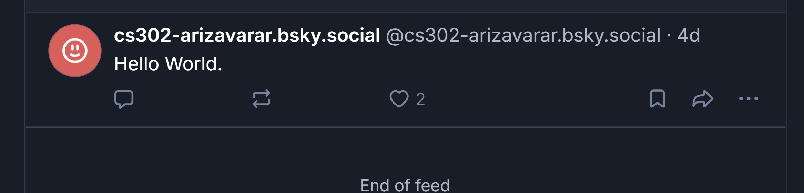
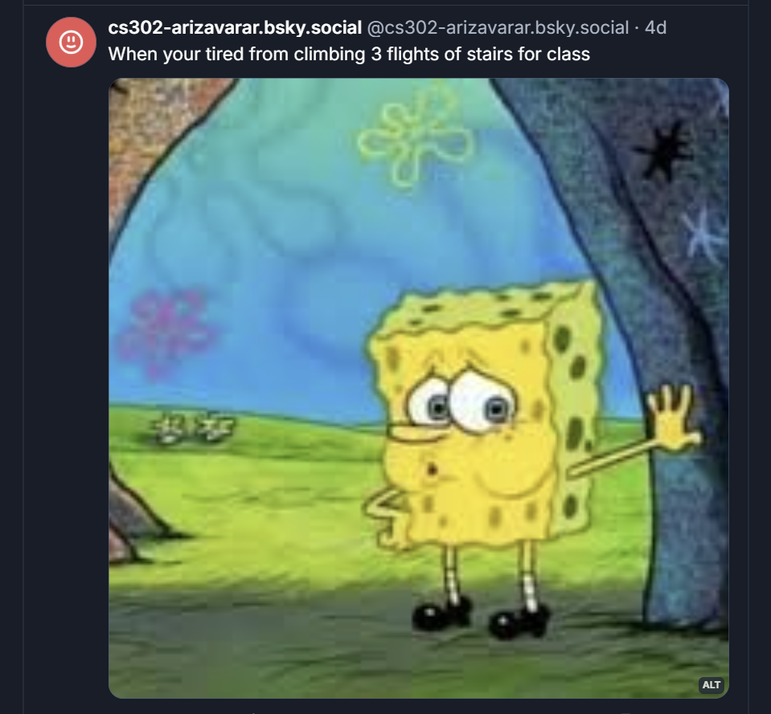
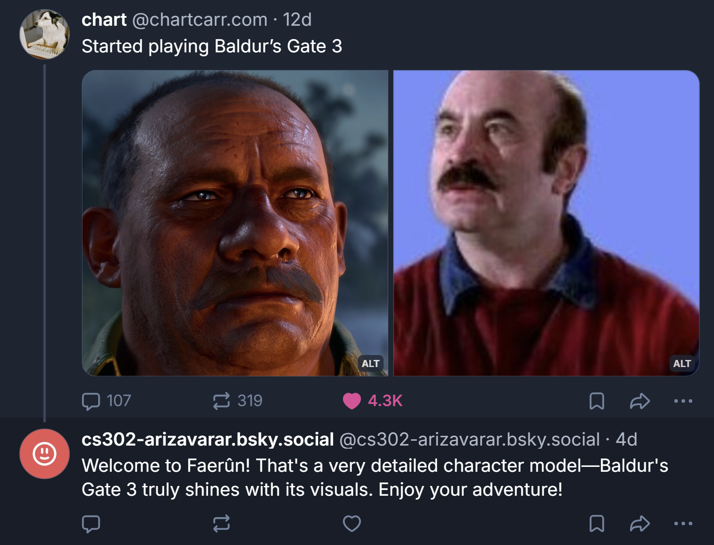
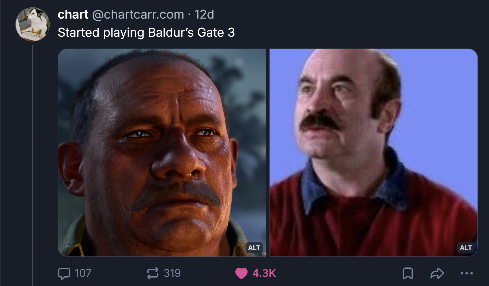
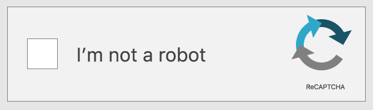
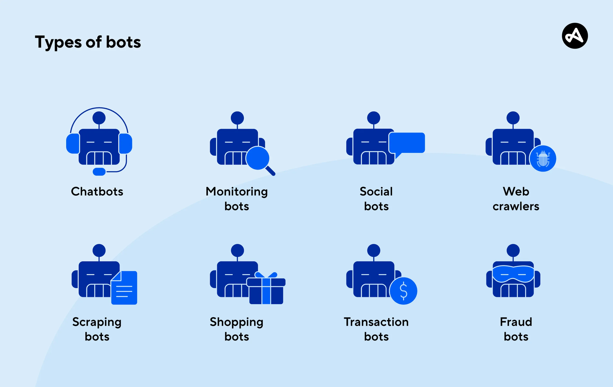

Social Media X Ethics
This page is under construction and is intended for future work in class CS302.
Bluesky Bot and Class Discussion/Readings
Full implementation of a Bluesky bot
Here's a link to the bots account if you want to check out the posts: Account

The images above depicts the text-only post that my bot made. This required a singular method call, and the text could be anything I wanted it to be. That's why I saw it fit to simply have the bot post a simple "Hello World", to first begin testing out the bots implementation. The second post (image to the right) required some work to format the image before making the post. It also called for a different method that was specifically for making a post with an image. The post itself is inspired by some comedic posts that I often see on social media, I simply tried to mimic something similar while also including text. The examples provided in the atproto repository made the entire process pretty streamlined, and allowed me to better understand how easy it is to make the bot generate posts.

Multimedia post by the bot

GenAI's reply to a users post

Interacting with a users post proved to be pretty tedious and difficult. The documentation was somewhat confused, and there were no examples in the atproto repo. Thus I began seraching for examples of interactions utilizing atproto, and found some small examples on constructing the URI for the a chosen designated profile. After obtaining the URI I utilized the get_post_thread() method to obtain the specific post I had chosen to interact with. Using some of the examples within the atproto repo, I learned how to leave a like on this users post. For the 4th post I decided to implement the gemini client we had built for a previous assignment. I copied over all the necessary files, and imported the appropriate libraries/modules. I did some searching on what to utilzie to obtain the text from the users post, and I formatted my code to take the text as input for gemini. Then I put geminis response into a reply to the users post. I wasn't fully satisfied, and wanted to have gemini also recognize the image in the post so as to generate a much more cohesive response. To accomplish this I went back into the documentation we had read for the GenAI assignment, and made appropriate changes to the gemini client to take in images as input as well. Then I simply searched for how to obtain the image from the post, and followed the formatting that the gemini client required for images. I was pleased with how the generated response was curated much closer to what the contents post talked about, and it almost seemed humanistic. This was most likely also a result of the system instructions that I altered to make gemini respond as a user replying to an online post.
Reflection On In Class Discussions and Readings
Reflection On Discussion Questions
The first question I reflected deeply on was, "Is it okay for a bot to harm some
people if it makes more people happy?"
My automatic response was that no bot that causes any form of harm to humans should
truly exist. When talking with Clause, however, I looked at bots with a
utilitarianism lens to
understand that nothing can truly be all good. Furthermore, I acknowledged that bots
do serve
a purpose, and their mere existence can cause harm to someone's online presence. So
it's unrealistic
to place such a high hurdle on a bot's existence. One area that I couldn't be swayed
in was the belief
that social media would be a better place without bots. I think this stems solely
from my interactions
with bots online, and I noticed that some people were either indifferent to theirs
or felt that they
had almost no interactions with bots online. Therefore, it's not something we all
reached a consensus
on, and I was a little surprised by the divide. My experience did resonate with what
Hudson mentioned in class,
where he noted the central attitudes that bots pushed forward during presidential
elections. Bots have been
detrimental in pushing narratives, and besides their obvious use for scams, they
also bloat ideologies
that can alter how thousands, if not millions, of people believe. Regardless of the
narratives they push, I think
artificially boosting numbers is immoral and completely detrimental to minorities
and majorities alike.
Another question I reflected on was, "Is social media a platform or a product?"
Before discussion,
there was no doubt in my mind that current social media apps are a product that
companies have
tailored for human consumption. I did agree that many of the apps had started off as
a platform where
people directly interacted with each other (sometimes only with people they knew).
However, I was of the
idea that social media apps now have an entertainment category that is fueled by
algorithms to maximize
content consumption and boost numbers. I'm unsure of who brought up the point, but
someone mentioned
that we can also be considered the product in the relationship we have with social
media apps. This
resonated with me, and I agree wholeheartedly, as we are fed constant advertisement
through these apps
that often tailor said ads according to the content preferences we have. The app
companies ensure that ad
ROI (Return on Investment) is as high as possible for the companies that pay for
their ad to be on the app.
I do think my opinion was swayed when Clause brought up the point that social media
are not solely
a product or platform, but rather a combination of the two. Some apps might lean
more towards the platform
category—for example, Discord is very straightforward and only supports
interactions the users themselves
choose to participate in. So I would consider it more of a platform that people use
to connect and talk
to each other, but there are caveats where the essence of a product creeps in
through
paywalls for improved
experiences. Other apps like YouTube seem much more like a product, where we are
constantly faced with ads,
and if we don't want to have them, we have to pay a monthly subscription. It still
functions as a platform
to share content and interact with one another, but the characteristics that make
it a product are much more prominent,
even throughout the interactions within the platform.


Reflection On Readings
I found the article Do Social Media Bots Dream of Electric Sheep? (Stieglitz et al., 2017) very compelling in the distinctions that were made between bots across the internet. I do think some of the characteristics that fall under the umbrella of benign are vague, but I also think it's hard to categorize what might constitute a "good" or beneficial bot, as it is subjective in nature. I personally believe that most, if not all, bots fall under either neutral or malicious; there are almost no bots that I can think of as beneficial. The examples listed for the benign category seem superficial, as most of the activities could very well be done by a human. Some, I would argue, would be done substantially better if a human were the one doing them, making the implementation of a bot a net negative and something I wouldn't categorize as benign. For example, I've always had horrible experiences with chatbots. Some have even turned me away from seeking help because they were so tedious to deal with or unhelpful. I will say that this isn't a general consensus; some people might have found them beneficial. However, based on my experience, having a human whom you can reason with and walk through steps with results in better troubleshooting and overall impact.
The second reading I reflected on was The Socialbot Network: When Bots Socialize
for Fame and Money (Boshmaf et al., 2011).
Many emotions and thoughts crossed my mind when considering how easy it was to
implement bots. Our Bluesky bot assignment reinforced
this understanding, and I had mixed feelings about the catering to bot creation that
apps enable. We've seen the countless issues that bots
have caused, so should we place the entire blame on those who create them? I think
that social media platforms share a good portion of the blame,
as they recognize the issue yet deploy minimal bot detection on their platforms. The
article mentions how easy it was to bypass reCAPTCHA and other forms
of bot detection, which I am sure the platforms recognize to a certain extent. In
fact, some features and tools that the platforms provide facilitate the
implementation and deployment of bots. This is why I think there is a distinct line
that we, as users, can draw when placing blame for bots on the platforms.
It's foolish to think that the companies behind these platforms don't benefit from
the boost in interactions and numbers generated by swarms of bots and the
content that the bots post. At a minimum, I think that social media platforms should
inform users of bot activities and whether certain accounts are likely bots.
There are distinguishable characteristics of bots, even if they try to mimic humans.
These could be tracked diligently by the platform to improve bot detection and
subsequently improve users' experiences by informing them whether certain accounts
are bots or not (if they were previously unaware of the fact). Since none of this
has been done on almost any social media platform, it's clear that the presence of
bots tends to be a net positive for the companies' platform profits, which is
indistinctively the basis and issue of the capitalist society we live in.
Lingering Questions
This might not be entirely relevant, but what are some modern statistics on bot presence within popular social media platforms?
Has there been any legal issue brought up against social media platforms that have neglected the presence of bots on their platform?
Or has their constant adhesion to being a platform protected them from andy legal backlash within this regard?
Does the capitalist society we live in dictate what ethical framework social media platforms follow when creating policies and features?
References
Stieglitz, S., Brachten, F., Ross, B., & Jung, A.-K. (2017). Do social bots dream of electric sheep? A categorisation of social media bot accounts. https://arxiv.org/abs/1710.04044 :contentReference[oaicite:0]{index=0}
Boshmaf, Y., Muslukhov, I., Beznosov, K., & Ripeanu, M. (2011). The socialbot network: When bots socialize for fame and money. In Proceedings of the 27th Annual Computer Security Applications Conference (ACSAC '11). https://people.ece.ubc.ca/matei/papers/acsac2011.pdf :contentReference[oaicite:1]{index=1}